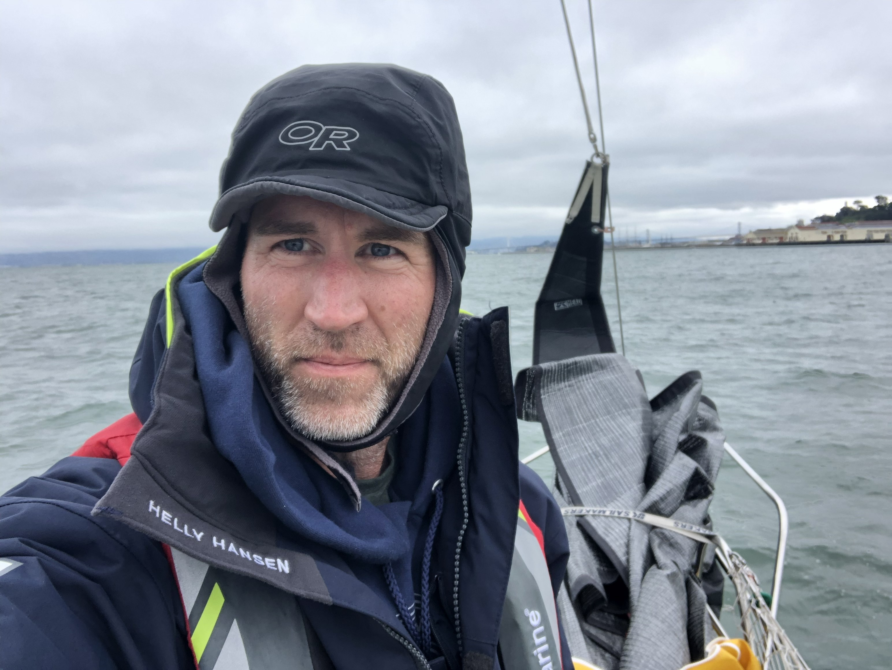

About
Sure Shot Marine LLC | Troubleshooting since 1995.
Background
- Thirty-plus years troubleshooting electrical systems.
- U.S. Navy and Coast Guard electronics veteran.
- B.S. Electrical Engineering.
- ABYC Certified Marine Electrician.

Sure Shot Marine LLC is newly formed, but I've been doing this work since 2014. The business is named after my 1990 Ericson 32-200, S/V Sure Shot, and making it official under that name was the right next step.
The Coast Guard brought me to the SF Bay Area in 2009, and in 2014 I started working on private vessels. I provide honest and practical solutions to complex problems. More often than not, an issue will come down to a single corroded wire, or what the ABYC calls an "unwanted open." Finding that wire is where I come in. I genuinely enjoy solving weird electrical mysteries and helping people understand them clearly. I see boats as people's dreams, and my goal is to help keep them alive.
Questions about my background? LinkedIn.
What I Work On
- DC and AC fault isolation
- Charging and battery system diagnostics
- Shore power and distribution evaluation
- Stray current and corrosion testing
- NMEA 2000 network troubleshooting
- Bilge and critical circuit verification
- System mapping and documentation
Lets Talk
Based in the East Bay. Serving Alameda, Oakland, Berkeley, Richmond, Sausalito, and surrounding Bay Area marinas.